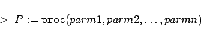
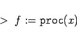
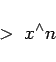
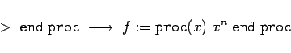
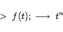

Inhalt Index DeskTop Bronstein

 Computeralgebrasysteme Maple Prozeduren, Funktionen und Operatoren
Computeralgebrasysteme Maple Prozeduren, Funktionen und Operatoren


Der Begriff Prozedur spielt in Maple eine bedeutende Rolle. Etwas vereinfacht dargestellt, hat eine Prozedur folgende Form:
|  | (20.49) |
Beim Aufruf der Prozedur sind dem Namen der Prozedur die benötigten Parameter in runden Klammern zu übergeben.
| Beispiel |
|




|